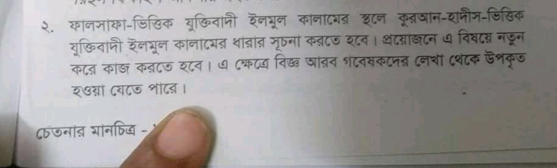

কথিত মাতুরিদি শাইখ আলি হাসান উসামা সাহেবের কারসাজি
৩০ সেপ্টেম্বর, ২০২০
কথিত মাতুরিদি শাইখ আলি হাসান উসামা সাহেবের কারসাজি-
যুগে যুগে বিজ্ঞজনদের বক্তব্যের অপব্যাখ্যা ও কারসাজি করে নিজেদের মনগড়া মতবাদকে শক্তিশালী করার অপচেষ্টা চালানো হয়েছে। মহান আল্লাহ'র সিফাত (গুণাবলির) ব্যাপারে ইমাম আবু হানিফা রাহ. ও ইমাম তাহাভি রাহ-এর বক্তব্যগুলো সাহাবা, তাবেইন, তবে-তাবেইন তথা সকল সালাফের আকিদা'র সারাংশ বলা যায়। কিন্তু তা অপব্যাখ্যা করে পরবর্তী আশ'আরি ও মাতুরিদিগন নিজেদের মাজহাব তায়িদ করতে কম কসরত করেন নি। এরই ধারাবাহিকতায় সম্প্রতি সালাফের আকিদা লালনকারী শাইখগনের বক্তব্যের অপব্যাখ্যা করে নিজেদের দল ভারী করতে কথিত মাতুরিদি শাইখগন কসরত চলিয়ে যাচ্ছেন। উদাহরণস্বরূপ নিচের স্ক্রিনশট দেখুন-
যেখানে উসামা সাহেব মুফতি হারুন ইজহারের একটি বক্তব্য এনে নিজের বেদআতি তাওয়িল ও মতবাদের পক্ষে নিয়ে যেতে সে বলছে-
//নিচের প্রস্তাবনাটি দিয়েছেন শায়খ মুফতি হারুন ইজহার হাফি.। যদিও মাথামোটা অজ্ঞ অন্ধ ব্যক্তিপূজারীরা তাকেও কালামি বলে গালি দেবে; তবে তারা দু-ধরনের কালামের পার্থক্য যে মোটেও বোঝে না, এটা তো সন্দেহাতীত। আবার কিছু না বুঝেই আরিফ আজাদ প্রমুখকে প্রমোট করে। খারেজিস্বভাবী এসব হাশাওয়িকে নিয়ে তো আর নতুন করে বলার কিছু নেই।//
সো রিডিকুলাস! উসামা সাহেব ভেবেছেন, শাইখ হারুন ইজহার ভ্রান্ত কালামিদের কুপ্রভাবে আক্রান্ত তার আশ'আরি-মাতুরিদিগনের বেদআতি তাওয়িলের পক্ষে সাফাই গেয়েছেন। যে কারণে তিনি তাওয়িল-বিরোধীদের খারেজি, হাশাওয়ি বলে ট্যাগ দিয়ে উল্লাস করলেন।
অথচ, শাইখ হারুন ইজহারের স্পষ্ট অন্য বক্তব্য দেখুন তিনি তাওয়িলের ব্যাপারে কী বলেন-
//এটা ছিলো সাময়িক প্রয়োজন। সমসাময়িক আর্গুমেন্টের কাউন্টার ন্যারেটিভ ও পাল্টা যুক্তির উপর গড়ে ওঠা দর্শন৷
এই দর্শনের প্রয়োজনীয়তা ফুরিয়ে গেছে৷
কিন্তু, যারা আশ'আরি মতবাদকে এখনো আঁকড়ে ধরেছেন, তাদের পথভ্রষ্ট হওয়ার সম্ভাবনা বেশি....
আশ'আরি মতবাদের তাওয়িলকে আমরা বর্জন করবো। ইমাম ত্বহাবি হানাফী মাযহাবের একজন বড় ব্যক্তিত্ব হয়ে আল্লাহর সিফাতের তা'বিল করতে নিষেধ করেছেন৷ আমরা নিজেদের হানাফী দাবি করে আশ'আরি মতবাদের অনুসরণে তা'বিল করে যাবো! এটা হয় না।//
সুতরাং উসামা সাহেবের ট্যাগ প্রত্যক্ষভাবে মুফতি হারুন ইজহারের গায়ে লাগছে। কেননা তিনি সালাফের মানহাজের অনুসারী, কালামিদের তাওয়িল-বিরোধী দলের অন্তর্ভুক্ত।
সালাফের বক্তব্য যাহিদ কাউসারি গং কীভাবে অপব্যাখ্যা আর কারসাজি করে নিজেদের মতবাদ প্রতিষ্ঠায় কাজে লাগান, কথিত মাতুরিদি শাইখ, বর্তমান পৃথিবীতে এক ও একক আহলে হক(!) উসামা সাহেবের কারসাজি থেকে অনুমান করে নিতে পারেন।
